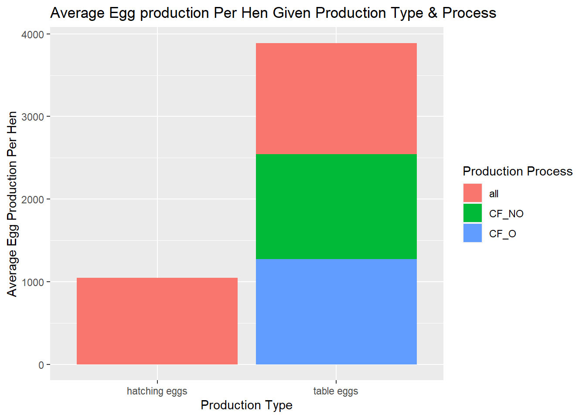
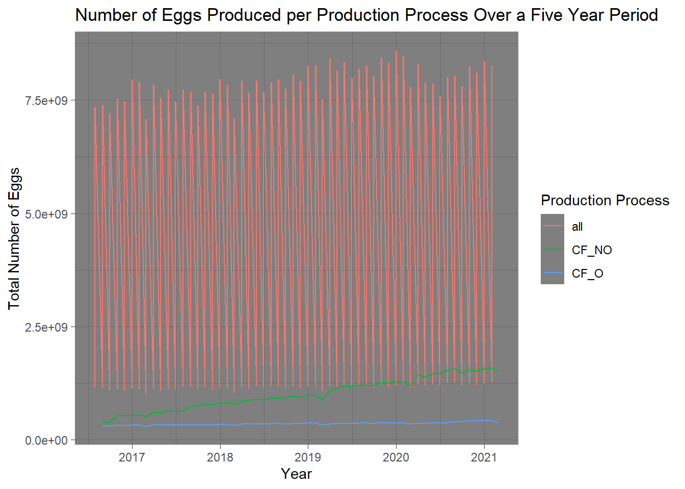
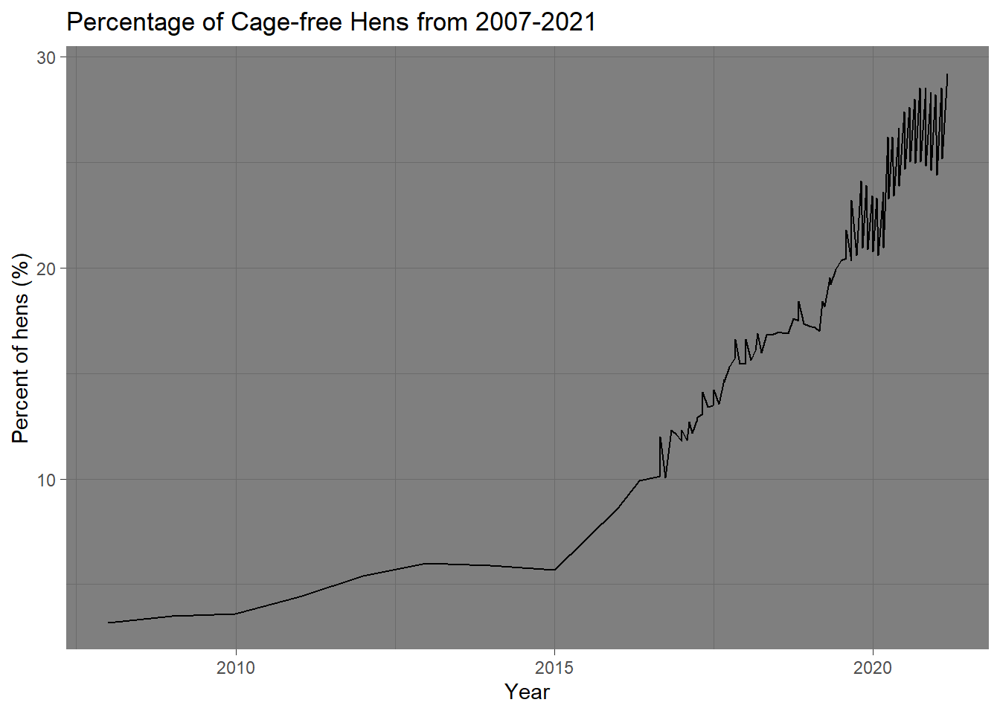

This data dictionary will provide insight into the dataset we will be working on today.
egg-production.csv
variable
class
description
observed_month
double
Month in which report observations are collected,Dates are recorded in ISO 8601 format YYYY-MM-DD
prod_type
character
type of egg product: hatching, table eggs
prod_process
character
type of production process and housing: cage-free (organic), cage-free (non-organic), all. The value ‘all’ includes cage-free and conventional housing.
n_hens
double
number of hens produced by hens for a given month-type-process combo
n_eggs
double
number of eggs producing eggs for a given month-type-process combo
source
character
Original USDA report from which data are sourced. Values correspond to titles of PDF reports. Date of report is included in title.
cage-free-percentages.csv
variable
class
description
observed_month
double
Month in which report observations are collected,Dates are recorded in ISO 8601 format YYYY-MM-DD
percent_hens
double
observed or computed percentage of cage-free hens relative to all table-egg-laying hens
percent_eggs
double
computed percentage of cage-free eggs relative to all table eggs,This variable is not available for data sourced from the Egg Markets Overview report
source
character
Original USDA report from which data are sourced. Values correspond to titles of PDF reports. Date of report is included in title.
1. Loading in Necessary Libraries
library(tidyverse) #Working with multiple Tidy packages
here() starts at C:/GitHub/MADA/kimberlyperez-MADA-portfolio
library(rpart) #Model fitting
Attaching package: 'rpart'
The following object is masked from 'package:dials':
prune
library(ranger) #Model fitting
Warning: package 'ranger' was built under R version 4.2.3
library(glmnet) #Model fitting
Warning: package 'glmnet' was built under R version 4.2.3
Loading required package: Matrix
Attaching package: 'Matrix'
The following objects are masked from 'package:tidyr':
expand, pack, unpack
Loaded glmnet 4.1-7
library(purrr)library(stacks)
Warning: package 'stacks' was built under R version 4.2.3
2. Loading Data
Let’s try a different way to load the data in
tuesdata <- tidytuesdayR::tt_load('2023-04-11')
--- Compiling #TidyTuesday Information for 2023-04-11 ----
--- There are 2 files available ---
--- Starting Download ---
Downloading file 1 of 2: `egg-production.csv`
Downloading file 2 of 2: `cage-free-percentages.csv`
--- Download complete ---
tuesdata <- tidytuesdayR::tt_load(2023, week =15) #loading in datasets from github
--- Compiling #TidyTuesday Information for 2023-04-11 ----
--- There are 2 files available ---
--- Starting Download ---
Downloading file 1 of 2: `egg-production.csv`
Downloading file 2 of 2: `cage-free-percentages.csv`
--- Download complete ---
ep <- tuesdata$`egg-production`#dataset 1cf <- tuesdata$`cage-free-percentages`#dataset 2
Now, we will explore the egg production and cage free datasets
observed_month prod_type prod_process n_hens
Min. :2016-07-31 Length:220 Length:220 Min. : 13500000
1st Qu.:2017-09-30 Class :character Class :character 1st Qu.: 17284500
Median :2018-11-15 Mode :character Mode :character Median : 59939500
Mean :2018-11-14 Mean :110839873
3rd Qu.:2019-12-31 3rd Qu.:125539250
Max. :2021-02-28 Max. :341166000
n_eggs source
Min. :2.981e+08 Length:220
1st Qu.:4.240e+08 Class :character
Median :1.155e+09 Mode :character
Mean :2.607e+09
3rd Qu.:2.963e+09
Max. :8.601e+09
Based on the glimpse function there are 220 rows and six variables to explore. I see some variables that may not be necessary for this exercise and will thus remove them during the wrangling process.
Cage-free
summary(cf)
observed_month percent_hens percent_eggs source
Min. :2007-12-31 Min. : 3.20 Min. : 9.557 Length:96
1st Qu.:2017-05-23 1st Qu.:13.46 1st Qu.:14.521 Class :character
Median :2018-11-15 Median :17.30 Median :16.235 Mode :character
Mean :2018-05-12 Mean :17.95 Mean :17.095
3rd Qu.:2020-02-28 3rd Qu.:23.46 3rd Qu.:19.460
Max. :2021-02-28 Max. :29.20 Max. :24.546
NA's :42
Based on the glimpse function there are 96 rows and four variables to explore. I see one variables that may not be necessary for this exercise and will thus remove it during the wrangling process.
ep_plot<- ep %>%ggplot(aes(x=prod_type, y=egg_hen)) +geom_col(aes(fill=prod_process)) +xlab("Production Type") +ylab("Average Egg Production Per Hen") +ggtitle("Average Egg production Per Hen Given Production Type & Process")ep_plot +scale_fill_discrete(name="Production Process")

There is not much variation in the production process when comparing cage-free organic, non-organic, or all (see above for what this encompasses), however, there is a difference in average egg production for hatching eggs versus table eggs. This is not surprising as the majority of hens produce table eggs which are sold for consumption, while a smaller majority are diverted to be reared on farms or backyards as production hens (e.g., egg or meat). Unlike other agricultural sectors, poultry sector is vertically integrated with minimal breed variation (e.g. Table eggs produced from hybrid White Leghorns v.hatching eggs from a variety of breeds including heritage), thus, a uniform distribution in production processes, across the various sectors, is expected.
ep_time<- ep %>%ggplot() +geom_line(aes(x=observed_month,y=n_eggs, color=prod_process)) +theme_dark()+labs ( x="Year",y="Total Number of Eggs", title="Number of Eggs Produced per Production Process Over a Five Year Period",color="Production Process")ep_time

Not an average so likely wont use this…
Cage-free
cf_plot<- cf %>%ggplot () +geom_line(aes(x= observed_month,y=percent_hens)) +theme_dark() +labs(x="Year",y="Percent of hens (%)",title="Percentage of Cage-free Hens from 2007-2021")cf_plot

I think the vast increase after 2015 is interesting, however, likely increased because of industry cooperation and commitments as well as state legislature (i.e., Western states [Oregon] only selling products containing “cage-free” eggs in stores).
Hypothesis
Given the varying needs based on consumer demands, I would expect the majority of egg production to come from tabled eggs, as these are for consumption and hatched eggs are for production purposes. Thus:
Predictor: Production Type Outcome: Average Number of Eggs per Hen
4. Training: Splitting Data
Here I will utilize and recreate prior machine learning (ML) models utilized in previous exercises to assess this data.
Warning: The number of observations in each quantile is below the recommended threshold of 20.
• Stratification will use 2 breaks instead.
The number of observations in each quantile is below the recommended threshold of 20.
• Stratification will use 2 breaks instead.
The number of observations in each quantile is below the recommended threshold of 20.
• Stratification will use 2 breaks instead.
The number of observations in each quantile is below the recommended threshold of 20.
• Stratification will use 2 breaks instead.
The number of observations in each quantile is below the recommended threshold of 20.
• Stratification will use 2 breaks instead.
Recipes for Train and Test Data plus Defining the Model
We need a workflow. Again, I am following my process from previous exercises to walk me through this portion. I am tailoring the code to fit my dataset.
! Fold1, Repeat1: internal: A correlation computation is required, but `estimate` is constant and ha...
! Fold2, Repeat1: internal: A correlation computation is required, but `estimate` is constant and ha...
! Fold3, Repeat1: internal: A correlation computation is required, but `estimate` is constant and ha...
! Fold4, Repeat1: internal: A correlation computation is required, but `estimate` is constant and ha...
! Fold5, Repeat1: internal: A correlation computation is required, but `estimate` is constant and ha...
! Fold1, Repeat2: internal: A correlation computation is required, but `estimate` is constant and ha...
! Fold2, Repeat2: internal: A correlation computation is required, but `estimate` is constant and ha...
! Fold3, Repeat2: internal: A correlation computation is required, but `estimate` is constant and ha...
! Fold4, Repeat2: internal: A correlation computation is required, but `estimate` is constant and ha...
! Fold5, Repeat2: internal: A correlation computation is required, but `estimate` is constant and ha...
! Fold1, Repeat3: internal: A correlation computation is required, but `estimate` is constant and ha...
! Fold2, Repeat3: internal: A correlation computation is required, but `estimate` is constant and ha...
! Fold3, Repeat3: internal: A correlation computation is required, but `estimate` is constant and ha...
! Fold4, Repeat3: internal: A correlation computation is required, but `estimate` is constant and ha...
! Fold5, Repeat3: internal: A correlation computation is required, but `estimate` is constant and ha...
! Fold1, Repeat4: internal: A correlation computation is required, but `estimate` is constant and ha...
! Fold2, Repeat4: internal: A correlation computation is required, but `estimate` is constant and ha...
! Fold3, Repeat4: internal: A correlation computation is required, but `estimate` is constant and ha...
! Fold4, Repeat4: internal: A correlation computation is required, but `estimate` is constant and ha...
! Fold5, Repeat4: internal: A correlation computation is required, but `estimate` is constant and ha...
! Fold1, Repeat5: internal: A correlation computation is required, but `estimate` is constant and ha...
! Fold2, Repeat5: internal: A correlation computation is required, but `estimate` is constant and ha...
! Fold3, Repeat5: internal: A correlation computation is required, but `estimate` is constant and ha...
! Fold4, Repeat5: internal: A correlation computation is required, but `estimate` is constant and ha...
! Fold5, Repeat5: internal: A correlation computation is required, but `estimate` is constant and ha...
Great, let’s check out the RMSE
train_rmse<-collect_metrics(train_fit)train_rmse
# A tibble: 2 × 6
.metric .estimator mean n std_err .config
<chr> <chr> <dbl> <int> <dbl> <chr>
1 rmse standard 2.20 25 0.0407 Preprocessor1_Model1
2 rsq standard NaN 0 NA Preprocessor1_Model1
! Fold1, Repeat1: internal: A correlation computation is required, but `estimate` is constant and ha...
! Fold2, Repeat1: internal: A correlation computation is required, but `estimate` is constant and ha...
! Fold3, Repeat1: internal: A correlation computation is required, but `estimate` is constant and ha...
! Fold4, Repeat1: internal: A correlation computation is required, but `estimate` is constant and ha...
! Fold5, Repeat1: internal: A correlation computation is required, but `estimate` is constant and ha...
! Fold1, Repeat2: internal: A correlation computation is required, but `estimate` is constant and ha...
! Fold2, Repeat2: internal: A correlation computation is required, but `estimate` is constant and ha...
! Fold3, Repeat2: internal: A correlation computation is required, but `estimate` is constant and ha...
! Fold4, Repeat2: internal: A correlation computation is required, but `estimate` is constant and ha...
! Fold5, Repeat2: internal: A correlation computation is required, but `estimate` is constant and ha...
! Fold1, Repeat3: internal: A correlation computation is required, but `estimate` is constant and ha...
! Fold2, Repeat3: internal: A correlation computation is required, but `estimate` is constant and ha...
! Fold3, Repeat3: internal: A correlation computation is required, but `estimate` is constant and ha...
! Fold4, Repeat3: internal: A correlation computation is required, but `estimate` is constant and ha...
! Fold5, Repeat3: internal: A correlation computation is required, but `estimate` is constant and ha...
! Fold1, Repeat4: internal: A correlation computation is required, but `estimate` is constant and ha...
! Fold2, Repeat4: internal: A correlation computation is required, but `estimate` is constant and ha...
! Fold3, Repeat4: internal: A correlation computation is required, but `estimate` is constant and ha...
! Fold4, Repeat4: internal: A correlation computation is required, but `estimate` is constant and ha...
! Fold5, Repeat4: internal: A correlation computation is required, but `estimate` is constant and ha...
! Fold1, Repeat5: internal: A correlation computation is required, but `estimate` is constant and ha...
! Fold2, Repeat5: internal: A correlation computation is required, but `estimate` is constant and ha...
! Fold3, Repeat5: internal: A correlation computation is required, but `estimate` is constant and ha...
! Fold4, Repeat5: internal: A correlation computation is required, but `estimate` is constant and ha...
! Fold5, Repeat5: internal: A correlation computation is required, but `estimate` is constant and ha...
test_rmse<-collect_metrics(test_fit)test_rmse
# A tibble: 2 × 6
.metric .estimator mean n std_err .config
<chr> <chr> <dbl> <int> <dbl> <chr>
1 rmse standard 2.11 25 0.0841 Preprocessor1_Model1
2 rsq standard NaN 0 NA Preprocessor1_Model1
Let’s move on from our null model to fitting some other models we have learned about (e.g., Tree,Linear Model, RF). We’ll start with a Tree Model
Nice! Now that we have that out of the way, we need to create a final fit.
final_wf<- dt_wf %>%finalize_workflow(bt)final_wf
══ Workflow ════════════════════════════════════════════════════════════════════
Preprocessor: Recipe
Model: decision_tree()
── Preprocessor ────────────────────────────────────────────────────────────────
0 Recipe Steps
── Model ───────────────────────────────────────────────────────────────────────
Decision Tree Model Specification (regression)
Main Arguments:
cost_complexity = 1e-10
tree_depth = 1
Computational engine: rpart
dt_fin_fit<- final_wf %>%fit(train_data)
Residuals
#Piping several augment helps determine predictions from OG train data, while mutate will make a new row with calculated residualsdt_res<- dt_fin_fit %>%augment(train_data) %>%select(c(.pred, egg_hen)) %>%mutate(.resid=egg_hen-.pred)dt_res
For the final assessment with the test data, I will utilize the RF model, both RMSE for RF and our Tree model were nearly the same ~0.83 after rounding.
This exercise contained a multistep process, from loading in the Tidy Tuesday data via a different method to data wrangling which allowed me to clean the data and remove any unnecessary columns/rows/variables. Because this Tidy Tuesday contained two data sets, I visualized both and ultimately decided to use the egg production data as the cage-free data had limited variables and would limit the hypothesis I could formulate.
I love production animals and am an owner of hatch chickens so I decided to explore the hatch v. table egg and the production of eggs. I also visualized this and decided it would be interesting to explore. I ran several models and ultimately decided on the random forest model given its RMSE in comparison to the null model. I am also trying to become more proficient with ML so I did not want to select a simple model such as the LM I ran. I referred back to previous exercises to ensure my workflow and process was consistent. I began with my trained data and once I selected the final model, I went through the same process with the test data. RF performed better than the null model (first model ran) which is indicative of a relationship. The RMSE of the test data is a bit higher than the train data which would make me cautious in utilizing this to make predictions or for overall reproducibility.